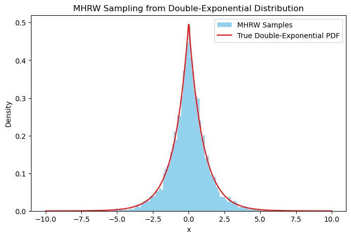

Bayesian Regression#
In this notebook we write a module suitable for two essential Bayesian Regression models. A linear regression model with the natural conjugate prior and a linear regression model with the independent Normal-Gamma prior over regression coefficients \beta and regression precision (inverse standard deviation), h.
Here is a list of functionalities we wish to implement in this course:
- Given a dataset (y, X), calculate the posterior distribution of \beta for the natural conjugate and the independent NG prior.
- To do (1), implement a Gibbs sampler of the posterior for any function f(\beta | y) since the NG prior cannot be handled analytically
- Since analytical results for the natural conjugate are possible, include methods to obtain these
- Include prediction methods for \hat y |y, X.
- Allow for heteroskedasticity in the errors.
Writing down a Bayesian Regression Model#
The baseline model is (\mathrm{dim}(\beta) = k)
where by convention, X first column are ones. We use the model from Bayesian Econometric Methods by Gary Koop, Dale J. Poirier, and Justin L. Tobias.
We make the following definitions, where \nu is the degrees of freedom, \hat \beta is the OLS estimate of \beta and s^2 is the OLS estimate of the variance:
Then, the likelihood of the data given h, \beta is
Task [concentrated likelihood]:
Write a function to compute the concentrated log-likelihood for \beta without the scaling term. One obtains a concentrated likelihood by substuting out other parameters for their maximum-likelihood estimate.
import numpy as np
from numba import jit, njit, prange
# simulate some data
X = np.random.rand(1000, 3)
X[:, 0] = 1. # intercept
beta = np.array([1, 2, 3], dtype=np.float64)
y = X @ beta + np.random.normal(0, 1, size =1000)
Solution [concentrated likelihood]:
First, note that the MLE of \sigma^2 = h^{-1} is s^2. Find the MLE of \sigma^2 conditional on \beta :
Now, substitute \hat{\sigma}^2(\beta) back into the likelihood:
Then $$ p(y | \beta) \propto \left((y - X\beta)^{\prime}(y - X\beta)\right)^{-N/2}. $$
@jit(nopython=True)
def ols_solution(X, y):
N = y.shape[0]
K = X.shape[1]
XX = X.T @ X
nu = N - K
beta_hat = np.linalg.solve(XX, X.T @ y)
s_sq = 1/nu * (y - X @ beta_hat).T @ (y - X @ beta_hat)
return beta_hat, s_sq, nu, N, K, XX
@jit(nopython=True)
def clhood_beta(beta, y, X):
N = y.shape[0]
ssr = (y - X @ beta).T @ (y - X @ beta)
return (np.log(ssr))*(-N/2)
# try it out
beta_hat, s_sq, nu, N, K, XX = ols_solution(X, y)
print(f'ols beta_hat: {beta_hat}')
clhood_beta(beta, y, X)
print(f'concentrated log-likelihood: {clhood_beta(beta_hat, y, X)}')
ols beta_hat: [0.86907181 2.14332413 3.06126176]
concentrated log-likelihood: -3450.6575608188514
The Natural Conjugate Prior#
We begin with a natural normal-gamma conjugate prior. This means:
- \beta conditional on h is multivariate Normal:
- Prior for error precision, h, is Gamma:
Note that we parametrize the Gamma distribution in terms of mean and degrees of freedom: \underline s^{-2} and \underline \nu, respectively.
- One writes for Normal-Gamma distribution:
- \underline \beta, \underline V, \underline s^{-2}, and \underline \nu are prior hyperparameter values chosen by the researcher.
The posterior for the NG-prior is:
where:
And \overline{s}^{-2} is defined through:
Task [natural conjugate posterior]:
Write a function to obtain the posterior parameters \overline V, \overline \beta, \overline \nu, \overline{s}^2
Definition (gamma distribution).
A continuous random variable Y has a gamma distribution with mean \mu > 0 and degrees of freedom \nu > 0, denoted by Y \sim \gamma(\mu, \nu), if its p.d.f. is:
where the integrating constant is given by:
and \Gamma(a) is the Gamma function (see Poirier, 1995, p. 98).
# some dummy parameters
nuprior = 500
Vprior_inv = np.eye(K)
s_sqprior = 1
beta_prior = np.zeros(K)
@jit(nopython=True)
def posterior_params(beta_prior, Vprior_inv, s_sqprior, nuprior, beta_hat, s_sq, nu, N, XX):
K = XX.shape[0]
Vpost_inv = Vprior_inv + XX
beta_post = np.linalg.solve(Vpost_inv, Vprior_inv @ beta_prior + XX @ beta_hat)
nupost = nuprior + N
s_sqpost = (nuprior * s_sqprior \
+ nu * s_sq \
+ (beta_hat - beta_prior).T @ Vprior_inv \
@ np.linalg.solve(np.eye(K) + np.linalg.inv(Vprior_inv @ XX), (beta_hat - beta_prior))
) / nupost
return beta_post,Vpost_inv, s_sqpost, nupost
betapost, Vpost_inv, s_sqpost, nupost = posterior_params(beta_prior, Vprior_inv, s_sqprior, nuprior, beta_hat, s_sq, nu, N, XX)
%%timeit
posterior_params(beta_prior, Vprior_inv, s_sqprior, nuprior, beta_hat, s_sq, nu, N, XX)
3.69 μs ± 345 ns per loop (mean ± std. dev. of 7 runs, 100,000 loops each)
The marginal posterior for \beta: is a multivariate t-distribution
For such holds
and
Intuition: Posterior mean and variance are a weighted average of information in the prior and the data.
Task [marginal posterior]:
Write a function which will compute the marginal posterior for \beta.
from scipy.stats import multivariate_t
def mposterior_beta(betapost, Vpost_inv, s_sq, nupost):
Vpost = np.linalg.inv(Vpost_inv)
t = multivariate_t(betapost, s_sq *Vpost, df=nupost)
betapost_var = nupost * s_sq * Vpost/(nupost - 2) # variance of the t-distribution
return betapost, betapost_var, t, Vpost # mean, variance, t-distribution, covariance matrix of posterior
# check that it works
mposterior_beta(betapost, Vpost_inv, s_sqpost, nupost)
(array([0.89285165, 2.12517763, 3.03015342]),
array([[ 0.00671138, -0.00550244, -0.00587363],
[-0.00550244, 0.01109588, -0.00023851],
[-0.00587363, -0.00023851, 0.01206552]]),
<scipy.stats._multivariate.multivariate_t_frozen at 0x157873640>,
array([[ 0.00666605, -0.00546527, -0.00583395],
[-0.00546527, 0.01102093, -0.0002369 ],
[-0.00583395, -0.0002369 , 0.01198402]]))
Finally, we wish to initialize the regression model with a diffuse prior: \underline{V} = c I_K with c large. We modularize our regression model to handle instances of it better.
Task [BayesianRegressionNC class]:
-
Write a class
BayesianRegressionNCwhich features methodsset_prior,get_posteriorandget_mposteriorwhich set the prior, and calculate posterior and marginal posterior, respectively, for the natural conjugate. Make use of theols_solutionfunction whenever you can, and usemultivariate_tfrom thescipylibrary. -
Add a
predictmethod which takes a matrixX_newas input.
class BayesianRegressionNC():
def __init__(self, y, X):
"""Initialize the class with data
y: the dependent variable
X: the independent variables
"""
self.y = y
self.X = X
self.beta_hat, self.s_sq, self.nu, self.N, self.K, self.XX = ols_solution(X, y)
self.ols = {
'beta': self.beta_hat,
's_sq': self.s_sq,
'nu': self.nu
}
self.prior = {
'beta': None,
'nu': None,
's_sq': None,
'V_inv': None
}
self.posterior = { # posterior for beta and h
'beta': None,
'V_inv': None,
's_sq': None,
'nu': None
}
self.mposterior = { # marginal posterior for beta
'beta': None,
'beta_var': None,
't': None,
'V': None
}
#self.betaprior, self.nuprior, self.s_sqprior, self.Vprior_inv = None, None, None, None
def set_prior(self, betaprior, Vprior_inv, s_sqprior, nuprior):
"""Set the prior parameters"""
self.prior = {
'beta': betaprior,
'nu': nuprior,
's_sq': s_sqprior,
'V_inv': Vprior_inv
}
def get_posterior(self):
"""Set the posterior parameters"""
betaprior = self.prior['beta']
Vprior_inv = self.prior['V_inv']
s_sqprior = self.prior['s_sq']
nuprior = self.prior['nu']
betapost, Vpost_inv, s_sqpost, nupost = posterior_params(betaprior, Vprior_inv, s_sqprior, nuprior, self.beta_hat, self.s_sq, self.nu, self.N, self.XX)
self.posterior = {
'beta': betapost,
'V_inv': Vpost_inv,
's_sq': s_sqpost,
'nu': nupost
}
def get_mposterior(self):
"""Set the marginal posterior parameters"""
betapost, Vpost_inv, s_sqpost, nupost = self.posterior['beta'], self.posterior['V_inv'], self.posterior['s_sq'], self.posterior['nu']
betapost, betapost_var, t, Vpost = mposterior_beta(betapost, Vpost_inv, s_sqpost, nupost)
self.mposterior = {
'beta': betapost,
'beta_var': betapost_var,
't': t,
'V': Vpost
}
def predict(self,Xnew):
"""Predict the dependent variable for new data using the posterior"""
mean = Xnew @ self.mposterior['beta']
s_sq, nu = self.posterior['s_sq'], self.posterior['nu']
V = s_sq * (np.eye(Xnew.shape[0]) + Xnew @ np.linalg.inv(self.posterior['V_inv']) @ Xnew.T)
predictions = {
'y_hat': mean,
'V': V,
't': multivariate_t(mean, V, df=nu)
}
return predictions
Let’s try out the new class. Set a diffuse prior, and obtain posterior and marginal posterior. Play around with the code to ensure that when setting the diffuse prior, the posterior mean approaches the OLS solution.
## initialize the class
bmod = BayesianRegressionNC(y, X)
## set the prior
bmod.set_prior(np.zeros(X.shape[1]),
np.eye(X.shape[1])*1E-5,
1,
0)
## get the posterior given y and X
bmod.get_posterior()
## get the marginal posterior for beta
bmod.get_mposterior()
## check the results
print(bmod.posterior, bmod.mposterior, bmod.ols, bmod.prior)
## prediction
Xnew = np.random.rand(2, 3)
predictions = bmod.predict(Xnew)
print(predictions)
{'beta': array([0.86907205, 2.14332394, 3.06126144]), 'V_inv': array([[1000.00001 , 507.08542046, 497.32198302],
[ 507.08542046, 346.65378599, 253.72723223],
[ 497.32198302, 253.72723223, 329.56200832]]), 's_sq': 0.9935805373327228, 'nu': 1000} {'beta': array([0.86907205, 2.14332394, 3.06126144]), 'beta_var': array([[ 0.00674628, -0.00553757, -0.00591707],
[-0.00553757, 0.01112504, -0.00020868],
[-0.00591707, -0.00020868, 0.01211065]]), 't': <scipy.stats._multivariate.multivariate_t_frozen object at 0x4bde56230>, 'V': array([[ 0.00677629, -0.0055622 , -0.00594339],
[-0.0055622 , 0.01117453, -0.00020961],
[-0.00594339, -0.00020961, 0.01216452]])} {'beta': array([0.86907181, 2.14332413, 3.06126176]), 's_sq': 0.9965702467624876, 'nu': 997} {'beta': array([0., 0., 0.]), 'nu': 0, 's_sq': 1, 'V_inv': array([[1.e-05, 0.e+00, 0.e+00],
[0.e+00, 1.e-05, 0.e+00],
[0.e+00, 0.e+00, 1.e-05]])}
{'y_hat': array([4.6031991 , 2.62950475]), 'V': array([[0.99743727, 0.00130722],
[0.00130722, 0.99907623]]), 't': <scipy.stats._multivariate.multivariate_t_frozen object at 0x4bded7dc0>}
Prediction and Monte Carlo Integration#
We now wish to calculate the probability of the some event by Monte Carlo integration, e.g.
Consider for example the case where
We now write a quick Monte-Carlo method to simulate this probability from our predictive density.
# First, simulate some predictions from the model
sims = predictions['t'].rvs(100_000)
# Second, calculate a boolean vector that is True if the first element is in A
bool = (sims[:, 0] > sims[:, 1]*0.9) * (sims[:, 0] < sims[:, 1]*1.5)
# Third, calculate the proportion of True values
p = bool.mean()
print("Prob(A):", p)
Prob(A): 0.3087
To finish this section, also plot the simulations and mark the draws which fall into A.
import matplotlib.pyplot as plt
n_plot = 10_000
fig, ax = plt.subplots(1,1)
ax.scatter(sims[:n_plot, 0], sims[:n_plot, 1], marker='.', alpha=0.1, c=bool[:n_plot])
ax.set_title('Simulated posterior predictive distribution')
ax.set_xlabel(r'$\hat{y}(X^*_1)$')
ax.set_ylabel(r'$\hat{y}(X^*_2)$')
plt.show()
Independent Normal-Gamma Priors and Heteroskedastic Errors#
Model Set-Up#
Keeping the Normal linear regression model, we now assume independence of \beta, h. As a consequence, the posterior will not have a closed form solution anymore, and we will need to write a routine - the Gibbs sampler - which allows us to draw samples from the posterior. We also include heteroskedasticity by intrducing a random diagonal matrix, \Omega. That is,
Now assume that
with
where f_G is the Gamma pdf. The difference to the natural conjugate prior is that \underline V is now the prior covariance of \beta, independent of h.
Parameter-Posteriors
The joint posterior of \beta, h does not take form of a nice, closed form density. However, the conditional posterior for \beta can be written as
where
\hat{\beta}(\Omega) is the GLS estimator. The conditional posterior for h takes a simple form, too:
where:
and:
Generally, the conditional posterior for \Omega is given by
In the model with Gamma distributed \lambda_i, one obtains
The conditional posteriors do not directly tell us about p(\beta, h, \Omega | y). Because we are interested in p(\beta, h | y) (or p(\beta | y) and p(h | y)), and not the posterior conditionals, we use a posterior simulator, called the Gibbs sampler, which uses conditional posteriors to produce random draws, \beta^{(s)} and h^{(s)} for s = 1, \dots, S. (For a formal introduction to the Gibbs sampler, the Wikipedia article is helpful.) These can be averaged to produce estimates of posterior properties just as with Monte Carlo integration.
Hyperparameters and M-H Random Walk#
The parameter \nu_\lambda is a hyperparameter, to which we assign a prior, too. One can show that if it follows an exponential prior, then its posterior density is, up to a constant factor:
where
The obvious question is: How can we sample from p(\nu_\lambda | y, \beta, h, \lambda)? To do so, we us a Metropolis-Hastings Random Walk algorithm (MHRW). The Metropolis-Hastings random walk algorithm is a Markov Chain Monte Carlo (MCMC) method used to generate samples from a probability distribution when direct sampling is difficult. In general terms, the algorithm aims to sample from a target distribution $ \pi(x) $ when its normalization constant is unknown or intractable.
Algorithm Steps
-
Initialize: Start at an initial state x_0.
-
Proposal Step: Generate a proposed new state x' using a proposal distribution q(x' | x), often symmetric (e.g., a normal distribution centered at the current state).
$$ x’ = x + \epsilon \quad \text{where } \epsilon \sim N(0, \sigma^2) $$ -
Acceptance Probability: Compute the acceptance ratio:
$$ \alpha = \min\left(1, \frac{\pi(x’) \cdot q(x | x’)}{\pi(x) \cdot q(x’ | x)}\right) $$
For symmetric proposal distributions where q(x' | x) = q(x | x'), this simplifies to:
$$ \alpha = \min\left(1, \frac{\pi(x’)}{\pi(x)}\right) $$
- Accept/Reject: Generate a uniform random number u \sim U(0, 1).
- If u \leq \alpha, accept the proposal and set x_{t+1} = x'.
-
Otherwise, reject the proposal and set x_{t+1} = x.
-
Repeat: Continue the process for N iterations to build a Markov chain of samples.
The Markov chain eventually converges to the target distribution \pi(x). The random walk proposal (e.g., normal step) ensures local exploration. Choosing the step size (via the proposal variance \sigma^2) balances mixing and efficiency.
Task [Metropolis-Hastings]: Write and illustrate the MHRW algorithm by sampling from a double-exponential (Laplace) distribution.
Solution:
# Define the target distribution: Double Exponential (Laplace) Distribution
def target_density(x):
# Double exponential (Laplace) PDF with mean=0, b=1
return 0.5 * np.exp(-abs(x))
# Metropolis-Hastings Random Walk Algorithm
def metropolis_hastings(target_density, proposal_std, num_samples, initial_state=0):
samples = [initial_state]
current_state = initial_state
for i in range(num_samples - 1):
# Step 1: Propose a new state using a normal distribution centered at current state
proposed_state = np.random.normal(current_state, proposal_std)
# Step 2: Calculate acceptance probability
acceptance_ratio = target_density(proposed_state) / target_density(current_state)
acceptance_prob = min(1, acceptance_ratio)
# Step 3: Accept or reject the proposal
if np.random.uniform(0, 1) < acceptance_prob:
current_state = proposed_state # Accept proposal
# Step 4: Store the current state
samples.append(current_state)
return np.array(samples)
# Parameters
proposal_std = 1.0 # Standard deviation of the proposal distribution
num_samples = 10000 # Number of samples to generate
# Run the MHRW sampling
samples = metropolis_hastings(target_density, proposal_std, num_samples)
# Plot the histogram of samples
x = np.linspace(-10, 10, 1000)
plt.figure(figsize=(8, 5))
plt.hist(samples, bins=100, density=True, alpha=0.9, color='skyblue', label='MHRW Samples')
plt.plot(x, target_density(x), 'r-', label='True Double-Exponential PDF')
plt.xlabel('x')
plt.ylabel('Density')
plt.legend()
plt.title('MHRW Sampling from Double-Exponential Distribution')
plt.show()

We see that the MHRW sampler yields correlated samples between sample i and i+1. Note that x_{i+1} | x_i is not Laplace (\pi(x)) distributed. Only the unconditional distribution, i.e. the histogram of \{x_1, ..., x_N\} approximately resembles the density \pi(x). We can see the correlation by plotting the time path of samples. Because of its presence, the MHRW method may require sample replications.
# Plot the time evolution of samples
plt.figure(figsize=(8, 5))
sample_ids = np.arange(len(samples))
plt.plot(np.arange(num_samples-100, num_samples), samples[-100:], 'b-', alpha=0.6, label='Sample Path', marker='o', markersize=5, markerfacecolor='red')
plt.xlabel('Sample ID')
plt.ylabel(r'Sample Value $x$')
plt.title('Time Evolution of MHRW Samples (last 100 samples)')
plt.legend()
plt.show()

Coding the Full Model#
Let’s code the model through a series of tasks.
Task [GLS estimator]:
Write a GLS estimator \hat{\beta}(\Omega), which takes the heteroskedasticity matrix \Omega as given. Recall that \Omega is diagonal.
Task [posterior parameters]:
Write a (set of) functions, which compute the conditional posterior parameters for \beta, h, \Omega.
@jit(nopython=True)
def gls_solution(X, y, Omega):
# supply only the diagonal of Omega to avoid costly computation
P = Omega**(-0.5)
Xg = X * P[:, np.newaxis]
yg = y * P
N = y.shape[0]
K = X.shape[1]
XX = Xg.T @ Xg
nu = N - K
beta_hat = np.linalg.solve(XX, Xg.T @ yg)
s_sq = 1/nu * (yg - Xg @ beta_hat).T @ (yg - Xg @ beta_hat)
return beta_hat, s_sq, nu, N, K, XX
def gls_dict_wrapper(X, y, Omega):
beta_hat, s_sq, nu, N, K, XOmega_invX = gls_solution(X, y, Omega)
gls_dict = {
'beta': beta_hat,
's_sq': s_sq,
'nu': nu,
'N': N,
'K': K,
'XOmega_invX': XOmega_invX
}
return gls_dict
print(f"{'OLS estimator':<40}", ols_solution(X, y)[0])
Omega = np.ones(X.shape[0]) # stable variance
print(f"{'GLS estimator, stable variance':<40}", gls_solution(X, y, Omega)[0])
Omega = np.arange(1, X.shape[0] + 1) # increasing variance
print(f"{'GLS estimator, increasing variance':<40}", gls_solution(X, y, Omega)[0])
OLS estimator [0.86907181 2.14332413 3.06126176]
GLS estimator, stable variance [0.86907181 2.14332413 3.06126176]
GLS estimator, increasing variance [0.94638503 2.29210031 2.59479426]
Task [Gibbs sampler (a)] Code up functions (e.g., sample_beta, sample_P and sample_h) to sample \beta, \Omega and h from their conditional posterior distributions.
from scipy.special import gammaln
@jit(nopython=True)
def numba_sum(X):
sum = 0
for i in range(len(X)):
sum += X[i]
return sum
## SAMPLING BETAS
# beta given y, h, Omega
@jit(nopython=True)
def cond_post_param_beta(h, P_root, beta_pri, V_inv_pri, X, y):
# precision matrix, P => P_root^2
Xg = X * P_root[:, np.newaxis]
yg = y * P_root
V_inv_pst = V_inv_pri + h * Xg.T @ Xg
rhs = V_inv_pri @ beta_pri + h * Xg.T @ yg
beta_pst = np.linalg.solve(V_inv_pst, rhs) # Solve V_inv_out @ x = rhs
return beta_pst, V_inv_pst # return posteriors for beta
# sample from the conditional posterior for beta
def sample_beta(h, P_root, beta_pri, V_inv_pri, X, y):
beta_pst, V_inv_pst = cond_post_param_beta(h, P_root, beta_pri, V_inv_pri, X, y)
return np.random.multivariate_normal(mean=beta_pst, cov=np.linalg.inv(V_inv_pst))
@jit(nopython=True)
def get_res(y, X, beta):
return y - X @ beta
## SAMPLING H
@jit(nopython=True)
def cond_post_param_h(P_root, resid, nu_pri, s_sq_pri):
N = P_root.shape[0]
nu_pst = nu_pri + N
residg = resid * P_root # transform the residuals
s_sq_pst = residg.T @ residg
s_sq_pst = s_sq_pst + nu_pri * s_sq_pri
s_sq_pst = s_sq_pst / nu_pst
return s_sq_pst, nu_pst
def sample_h(P_root, resid, nu_pri, s_sq_pri):
s_sq_pst, nu_pst = cond_post_param_h(P_root, resid, nu_pri, s_sq_pri)
shape = nu_pst / 2
scale = 2 * s_sq_pst**(-1) / nu_pst
return np.random.gamma(shape=shape, scale=scale)
## SAMPLING P
@jit(nopython=True)
def cond_post_param_P(nu_lambda, resid, h):
dof_lambda = nu_lambda + 1
mu_lambda = (nu_lambda + 1)/(h * resid**2 + nu_lambda)
return mu_lambda, dof_lambda
def sample_P(resid, h, nu_lambda):
mu_lambda, dof_lambda = cond_post_param_P(nu_lambda, resid, h)
shape = dof_lambda/2
scale = 2 * mu_lambda / dof_lambda # this is a vector
return np.random.gamma(shape, scale) # returns [... λ_i ...]
Task [Gibbs sampler (b)] Code up a function sample_nu_lambda_new to sample the next \nu_\lambda from its conditional distribution. It is not necessary to fully nest the MHRW algorithm within the Gibbs sampler. Instead, the Gibbs sampler will run exactly one step of the Metropolis Hastings algorithm, hence sample_nu_lambda_new must take in the \nu_\lambda from the previous Gibbs sampling iteration.
## SAMPLING NU_LAMBDA
@jit(nopython=True)
def cond_post_param_nu_lambda(P, nu_lambda_pri):
"""Compute the parameter eta for the density of the posterior of nu_lambda
given the current state of P (np.array)
P = [λ1, ..., λN]
"""
lx = -np.log(P) + P
eta = 1/nu_lambda_pri + 0.5 * numba_sum(lx)
return eta
def dof_density_prop_log(nu, eta, N):
p = np.log(nu / 2)*(N * nu / 2) + gammaln(nu / 2)*(-N) + (-eta * nu)
return p
def dof_density_ratio(nu_lambda_new, nu_lambda_old, eta, N):
return np.exp(dof_density_prop_log(nu_lambda_new, eta, N) - dof_density_prop_log(nu_lambda_old, eta, N))
# instead of the acceptance sampling, we use the random walk MH.
def sample_nu_lambda_new(nu_lambda_old, P, nu_lambda_pri, MH_param=1.):
N = P.shape[0] # number of obs = number of latent lambdas
## Use M-H step to draw new value for nu_lambda vector
# 1. Propose a new value
nu_lambda_new = nu_lambda_old + np.random.normal(scale=MH_param) # random walk MH
# 2. Calculate the ratio of densities
if nu_lambda_new > 0 : # ensure it is positive
eta = cond_post_param_nu_lambda(P, nu_lambda_pri) # parameter in the density
acc_ratio = dof_density_ratio(nu_lambda_new, nu_lambda_old, eta, N) ###
else:
acc_ratio = 0.
# 3. Accept or reject the new values
if acc_ratio >= 1.:
accept = True
elif acc_ratio == 0.:
accept = False
else:
accept = np.random.rand() < acc_ratio
# 4. Return the new values, accepted or not
return accept * nu_lambda_new + (1-accept) * nu_lambda_old, accept
Gibbs sampler#
We now assemble the Gibbs sampler. The algorithm can be spelled out as follows:
Initialize: \beta^{(0)} = \beta^{OLS}, h^{(0)} = \hat{\sigma}^2, \Omega^{(0)} = diag(\lambda_1^{-1}, ..., \lambda_N^{-1}) = diag(1/\boldsymbol{\lambda}^{(0)}), \boldsymbol{\lambda}^{(0)} = 1.
- Initialize:
- \beta^{(0)} = \beta^{OLS}
- h^{(0)} = \hat{\sigma}^2
- \Omega^{(0)} = \operatorname{diag}(\lambda_1^{-1}, \dots, \lambda_N^{-1}) = \operatorname{diag}(1/\boldsymbol{\lambda}^{(0)})
-
\boldsymbol{\lambda}^{(0)} = 1 (vector of ones)
-
Iterate for t = 1, 2, \dots, T (number of iterations):
Step 1: Update \beta^{(t)} (regression coefficients):
Sample \beta^{(t)} from the conditional posterior:
$$
\beta^{(t)} \mid \mathbf{y}, \mathbf{X}, h^{(t-1)}, \Omega^{(t-1)}, \nu_\lambda^{(t-1)} \sim N(\overline \beta,\overline V)
$$
Step 2: Update h^{(t)} (variance hyperparameter):
Sample h^{(t)} from the conditional posterior:
$$
h^{(t)} \mid \mathbf{y}, \mathbf{X}, \beta^{(t)}, \nu_\lambda^{(t-1)} \sim G\left(\overline{s}^{-2}, \overline{\nu}\right)
$$
Step 3: Update \boldsymbol{\lambda}^{(t)}, \Omega^{(t)} (heteroskedasticity parameters):
For each i = 1, \dots, N, sample:
$$
\lambda_i^{(t)} \mid \mathbf{y}, \mathbf{X}, \beta^{(t)}, h^{(t)}, \nu_\lambda^{(t-1)} \sim f_G\bigg( \lambda_i \big| \frac{\nu_\lambda + 1}{h \epsilon_i^2 + \nu_\lambda}, \nu_\lambda +1 \bigg)
$$
Step 4: Update \Omega^{(t)} (diagonal precision matrix):
Set:
$$
\nu_\lambda^{(t)} \mid \mathbf{y}, \mathbf{X}, \beta^{(t)}, h^{(t)}, \boldsymbol{\lambda}^{(t)}, \nu_\lambda^{(t-1)} \sim p(\nu_\lambda | y, \beta, h, \lambda)
$$
- Repeat steps 1 through 4 until (distributional) convergence or for T iterations.
Let’s also include an argument which switches off heteroskedasticity of the model.
def gibbs_sampler(X, y, priors, heteroskedastic=True,draws=10_000, burn_in=1_000, MH_params={'sigma': .25}):
MH_sigma = MH_params['sigma']
N, _ = X.shape
gls_dict = gls_dict_wrapper(X, y, np.array([1.0]*N))
# initialize the parameters
gibbs = {
'betas': [gls_dict['beta']],
'h': [1/gls_dict['s_sq']],
'Ps': [np.array([1.0]*N)],
'nu_lambda': [priors['nu_lambda']], # λ: prior mean dof,
'mh_acceptances': [] # counts the number of accepted proposals in the M-H step
}
P_root_sample = gibbs['Ps'][-1]**0.5 # initialize the square root of precision matrix
for i in range(draws+burn_in):
# sample beta given h, Omega, ν_λ
beta_sample = sample_beta(
gibbs['h'][-1], # h: sampled precision
P_root_sample, # λ: (root of) last precision sample
priors['beta'], # β: prior mean
priors['V_inv'], # β: prior precision matrix
X,
y)
resid = get_res(y, X, beta_sample)
gibbs['betas'].append(beta_sample)
# sample h given beta, Omega, ν_λ
h_sample = sample_h(P_root_sample, # λ: (root of) last precision sample
resid, # β: residuals from sampled beta
priors['nu'], # h: prior dof
priors['s_sq']) # h: prior
gibbs['h'].append(h_sample)
if not heteroskedastic:
continue
# sample ν_λ given beta, h, Omega
nu_lambda_sample, mh_acceptance = sample_nu_lambda_new(gibbs['nu_lambda'][-1],
gibbs['Ps'][-1],
priors['nu_lambda'],
MH_sigma)
gibbs['nu_lambda'].append(nu_lambda_sample)
gibbs['mh_acceptances'].append(mh_acceptance)
# sample lambdas/Omega given beta, h, ν_λ
P_sample = sample_P(resid, # β: residuals from sampled beta
gibbs['h'][-1], # h: sampled precision
gibbs['nu_lambda'][-1]) # λ: last dof sample
gibbs['Ps'].append(P_sample)
P_root_sample = P_sample**0.5
# discard burn-in
gibbs['betas'] = gibbs['betas'][burn_in:]
gibbs['h'] = gibbs['h'][burn_in:]
gibbs['Ps'] = gibbs['Ps'][burn_in:]
gibbs['nu_lambda'] = gibbs['nu_lambda'][burn_in:]
return gibbs
# priors (hyperparameters)
K = X.shape[1]
priors = {
'beta': np.zeros(K), # beta: zero mean for beta
'V_inv': np.eye(K)*1E-5, # beta: weak prior for beta
's_sq': 1, # h: expected precision is 1 = 1/s_sq
'nu': 4, # h: dof
'nu_lambda': 25 # λ: prior mean dof
}
%timeit gibbs_sampler(X, y, priors, draws=1_000, burn_in=1_000, MH_params={'sigma': .5})
%timeit gibbs_sampler(X, y, priors, draws=10_000, burn_in=1_000, MH_params={'sigma': .5})
%timeit gibbs_sampler(X, y, priors, draws=100_000, burn_in=1_000, MH_params={'sigma': .5})
303 ms ± 51.4 ms per loop (mean ± std. dev. of 7 runs, 1 loop each)
1.41 s ± 71.1 ms per loop (mean ± std. dev. of 7 runs, 1 loop each)
12.4 s ± 308 ms per loop (mean ± std. dev. of 7 runs, 1 loop each)
Parallel Gibbs Sampler#
To speed things up and get a little practice in parallel computing, let’s parallelize the Gibbs sampler using joblib.
from joblib import Parallel, delayed
def draw_gibbs_sample(gibbs, priors, y, X, heteroskedastic=True, mh_params={'sigma': .25}):
MH_sigma = mh_params['sigma']
P_root = gibbs['Ps'][-1]**0.5 # precision matrix
# sample beta given h, Omega, ν_λ
beta_sample = sample_beta(
gibbs['h'][-1], # h: sampled precision
P_root, # λ: (root of) last precision sample
priors['beta'], # β: prior mean
priors['V_inv'], # β: prior precision matrix
X,
y)
resid = get_res(y, X, beta_sample)
# sample h given beta, Omega, ν_λ
h_sample = sample_h(P_root, # λ: (root of) last precision sample
resid, # β: residuals from sampled beta
priors['nu'], # h: prior dof
priors['s_sq']) # h: prior
if not heteroskedastic:
return beta_sample, h_sample, gibbs['Ps'][-1], gibbs['nu_lambda'][-1], 0
# sample ν_λ given beta, h, Omega
nu_lambda_sample, mh_acceptance = sample_nu_lambda_new(gibbs['nu_lambda'][-1],
gibbs['Ps'][-1],
priors['nu_lambda'],
MH_sigma)
# sample lambdas/Omega given beta, h, ν_λ
P_sample = sample_P(resid, # β: residuals from sampled beta
gibbs['h'][-1], # h: sampled precision
gibbs['nu_lambda'][-1]) # λ: last dof sample
gibbs['Ps'].append(P_sample)
return beta_sample, h_sample, P_sample, nu_lambda_sample, mh_acceptance
def merge_dictionaries(dict_list):
master_dict = {}
for d in dict_list:
for key, value in d.items():
if key not in master_dict:
master_dict[key] = []
master_dict[key].extend(value) # Unpack the list and append the elements
return master_dict
def gibbs_sampler_parallel(X, y, priors, heteroskedastic=True, draws=10_000, burn_in=1_000, n_jobs=5, mh_params={'sigma': .25}):
N, _ = X.shape
ols = gls_dict_wrapper(X, y, np.array([1.0]*N))
# initialize the parameters
gibbs = {
'betas': [ols['beta']],
'h': [1/ols['s_sq']],
'Ps': [np.array([1.0]*N)],
'nu_lambda': [priors['nu_lambda']], # λ: prior mean dof,
'mh_acceptances': [] # counts the number of accepted proposals in the M-H step
}
# burn in
for i in range(burn_in):
beta_sample, h_sample, P_sample, nu_lambda_sample, _ = draw_gibbs_sample(gibbs, priors, y, X, heteroskedastic, mh_params)
gibbs['betas'].append(beta_sample)
gibbs['h'].append(h_sample)
gibbs['Ps'].append(P_sample)
gibbs['nu_lambda'].append(nu_lambda_sample)
# discard burn-in
gibbs['betas'] = gibbs['betas'][burn_in:]
gibbs['h'] = gibbs['h'][burn_in:]
gibbs['Ps'] = gibbs['Ps'][burn_in:]
# draw samples
draws_per_job = int(np.ceil(draws / n_jobs))
def draw_samples_parallel(gibbs):
gibbs_local = gibbs.copy()
for j in range(draws_per_job):
beta_sample, h_sample, P_sample, nu_lambda_sample, mh_acceptance = draw_gibbs_sample(gibbs_local, priors, y, X, heteroskedastic, mh_params)
gibbs_local['betas'].append(beta_sample)
gibbs_local['h'].append(h_sample)
gibbs_local['Ps'].append(P_sample)
gibbs_local['nu_lambda'].append(nu_lambda_sample)
gibbs_local['mh_acceptances'].append(mh_acceptance)
gibbs_local['betas'].pop(0) # remove the first element (burn in element)
gibbs_local['h'].pop(0)
gibbs_local['Ps'].pop(0)
gibbs_local['nu_lambda'].pop(0)
return gibbs_local
results = Parallel(n_jobs=n_jobs)(delayed(draw_samples_parallel)(gibbs) for _ in range(n_jobs))
gibbs = merge_dictionaries(results)
return gibbs
# priors (hyperparameters)
K = X.shape[1]
priors = {
'beta': np.zeros(K), # beta: zero mean for beta
'V_inv': np.eye(K)*1E-5, # beta: weak prior for beta
's_sq': 1, # h: expected precision is 1 = 1/s_sq
'nu': 4, # h: dof
'nu_lambda': 25 # λ: prior mean dof
}
gibbs = gibbs_sampler_parallel(X, y, priors, heteroskedastic=False, draws=10_000, burn_in=50_000, n_jobs=1, mh_params={'sigma': .5})
np.array(gibbs['mh_acceptances']).mean(),np.array(gibbs['nu_lambda']).mean() #if heteroskedastic=False, the acceptance rate is 0 and nu_lambda has no effect
(0.0, 25.0)
%time gibbs = gibbs_sampler_parallel(X, y, priors, draws=1_000_000, burn_in=1_000, n_jobs=5, mh_params={'sigma': .5})
%time gibbs = gibbs_sampler_parallel(X, y, priors, draws=1_000_000, burn_in=1_000, n_jobs=15, mh_params={'sigma': .5})
CPU times: user 9.87 s, sys: 18.7 s, total: 28.6 s
Wall time: 1min 15s
CPU times: user 11.5 s, sys: 44.7 s, total: 56.2 s
Wall time: 2min 3s
Visualization#
We can now e.g. plot the joint distribution of the (\beta_1, \beta_2). Also visualize the posterior probability that \beta_2 < \beta_1
# take some samples
betas_samples = np.array(gibbs['betas'][-10_000:])
# lets plot the simulated joint distribution of the first two betas
bool = betas_samples[ :, 0] > 0.6*betas_samples[:, 1]
fig, ax = plt.subplots(1,1)
ax.scatter(betas_samples[:, 0], betas_samples[:, 1], marker='.', alpha=0.1, c=bool)
ax.set_title('Simulated posterior distribution of beta')
ax.set_xlabel(r'$\beta_1$')
ax.set_ylabel(r'$\beta_2$')
plt.show()
print("prob = ", bool.mean())
prob = 0.001
A Full Class BayesianRegressionIngHet#
Now that the Gibbs sampler is completed, we should package up our functions and write a class for the independent NG prior with heteroskedasticity. We can then deploy the code easily for estimation problems.
class BayesianRegressionIngHet():
def __init__(self, X, y, priors, heteroskedastic=True):
self.X = X
self.y = y
self.priors = priors
self.gibbs = None
self.heteroskedastic = heteroskedastic
def run_gibbs(self, draws=10_000, burn_in=1_000, n_jobs=5, mh_params={'sigma': 1.}):
self.mh_params = mh_params
self.gibbs = gibbs_sampler_parallel(self.X, self.y, self.priors, draws=draws, burn_in=burn_in, n_jobs=n_jobs, heteroskedastic=self.heteroskedastic, mh_params=mh_params)
_,_ = self.get_posterior_stats()
def get_posterior_stats(self):
assert self.gibbs is not None, "Run Gibbs sampler first!"
betas = np.array(self.gibbs['betas'])
betas_mean = betas.mean(axis=0)
betas_cov = np.cov(betas, rowvar=False)
h_mean = np.mean(self.gibbs['h'])
nu_lambda_mean = np.mean(self.gibbs['nu_lambda'])
nu_lambda_var = np.var(self.gibbs['nu_lambda'])
self.posterior_stats = {
'betas_mean': betas_mean,
'betas_cov': betas_cov,
'h_mean': h_mean,
'nu_lambda_mean': nu_lambda_mean,
'nu_lambda_var': nu_lambda_var
}
return betas_mean, betas_cov
def summarize_posterior(self):
means, sds = self.posterior_stats['betas_mean'], mod.posterior_stats['betas_cov'].diagonal()**0.5
means = np.append(means, [self.posterior_stats['nu_lambda_mean']])
sds = np.append(sds, [self.posterior_stats['nu_lambda_var']**0.5])
names = [f'β{i}' for i in range(1, len(means))] + ['ν_λ']
# Print the header
print(f"{'coef':<10} {'val':>10} {'sd':>10}")
# Print each row
for name, mean, sd in zip(names, means, sds):
print(f"{name:<10} {mean:>10.4f} {sd:>10.4f}")
print("M-H acceptance rate:", f"{np.array(self.gibbs['mh_acceptances']).mean():0.4f}")
Applications#
House Prices#
We use data supplied on the textbook website. We investigate the degree of heteroskedasticity by Gibbs sampling \nu_\lambda. Note that this regression model is somewhat equivalent to a linear regression with fat-tailed, t-distributed errors with \nu_\lambda degrees of freedom. That is exactly the model you would get if you integrate out \lambda_i. Thus, Gibbs sampling \nu_\lambda allows us to evaluate the fat-tailedness of our data.
import pandas as pd
# URL of the data
url = 'https://web.ics.purdue.edu/~jltobias/HPRICE.TXT'
# Read the data into a pandas DataFrame
df = pd.read_csv(url, sep='\s+')
# turn data into numpy arrays
y = df['%price'].to_numpy()
X = df[['lot_siz', '#bed', '#bath', '#stor']].to_numpy()
X = np.column_stack((np.ones(X.shape[0]), X)) # add intercept
df.head()
| %price | lot_siz | #bed | #bath | #stor | drive. | recroom | b-ment | gas | aircond | #gar | desireloc | |
|---|---|---|---|---|---|---|---|---|---|---|---|---|
| 0 | 42000 | 5850 | 3 | 1 | 2 | 1 | 0 | 1 | 0 | 0 | 1 | 0 |
| 1 | 38500 | 4000 | 2 | 1 | 1 | 1 | 0 | 0 | 0 | 0 | 0 | 0 |
| 2 | 49500 | 3060 | 3 | 1 | 1 | 1 | 0 | 0 | 0 | 0 | 0 | 0 |
| 3 | 60500 | 6650 | 3 | 1 | 2 | 1 | 1 | 0 | 0 | 0 | 0 | 0 |
| 4 | 61000 | 6360 | 2 | 1 | 1 | 1 | 0 | 0 | 0 | 0 | 0 | 0 |
# fix some priors
priors = {
'beta': np.array([0.,
10,
5_000,
10_000,
10_000]), # beta: zero mean for beta
'V_inv': np.diag(np.array([10_000, 5, 2_500, 5_000, 5_000], dtype=float)**(-2)), # beta: weak prior for beta USE THE PRIOR SUPPLIED IN THE BOOK
's_sq': 1/4*1E8, # h: expected precision is 1 = 1/s_sq
'nu': 5, # h: dof
'nu_lambda': 25 # λ: hypothesized dof (fat-tailedness of error variance)
}
mod = BayesianRegressionIngHet(X, y, priors, heteroskedastic=True)
mod.run_gibbs(draws=100_000, burn_in=25_000, n_jobs=10, mh_params={'sigma': 0.5})
mod.get_posterior_stats()
mod.summarize_posterior()
coef val sd
β1 -457.7392 2907.1692
β2 5.2368 0.3596
β3 2125.2660 966.4355
β4 14917.1624 1652.3078
β5 8121.5951 852.2948
ν_λ 4.4905 1.7443
M-H acceptance rate: 0.4954
plt.hist( np.array(mod.gibbs['nu_lambda']), bins=500, density=True, color='red')
plt.title(r"$\nu_\lambda$ Draws")
plt.xlim(0, 10)
plt.show()
Is Real GDP Oscillatory and/or Explosive?#
Geweke (1988, Journal of Business and Economic Statistics)
We investigate whether real GDP oscillates (the lag polynomial has an imaginary root) or is explosive (the lag polynomial has at least one root within the unit cycle) in an AR(p) model. The model is
$$ y_t = \beta_1 + \sum_{j=1}^p \beta_{1+j} y_{t-j} + \varepsilon_t, $$ with independent prior and no heteroskedasticity.
import pandas_datareader.data as web
import os
start, end = '1947-01-01', '2025-01-01' # '2005-07-01'
# Fetch the GDPC1 time series data from FRED
df = web.DataReader('GDPC1', 'fred', api_key=os.getenv('FRED_API_KEY'), start=start, end=end)
df.head()
df['log_GDP'] = np.log(df['GDPC1'])
df['log_GDP'].plot(title='US Real GDP (log scale)', legend=False)
plt.show()
# Manipulate the data to create a time series regression
def lagged_time_series_df(y, num_lags, index=None):
X = np.zeros((y.shape[0], num_lags+1))
for i in range(1, num_lags+1):
X[i:, i] = y[:-i]
X[:, 0] = 1 # intercept
X = X[num_lags:, :] # remove the first few rows with NaNs
y = y[num_lags:] # remove the first few rows with NaNs
df = pd.DataFrame(np.column_stack((y, X)), columns=['y'] + ['const'] + [f'lag_{i}' for i in range(1, num_lags+1)], index=index[num_lags:])
return df
df_ts = lagged_time_series_df(df['log_GDP'].to_numpy(), 3, index=df.index)
df_ts.head()
| y | const | lag_1 | lag_2 | lag_3 | |
|---|---|---|---|---|---|
| DATE | |||||
| 1947-10-01 | 7.699141 | 1.0 | 7.683603 | 7.685653 | 7.688309 |
| 1948-01-01 | 7.714089 | 1.0 | 7.699141 | 7.683603 | 7.685653 |
| 1948-04-01 | 7.730478 | 1.0 | 7.714089 | 7.699141 | 7.683603 |
| 1948-07-01 | 7.736207 | 1.0 | 7.730478 | 7.714089 | 7.699141 |
| 1948-10-01 | 7.737339 | 1.0 | 7.736207 | 7.730478 | 7.714089 |
Now, set up a dictionary for priors and run the Gibbs sampler.
priors = {
'beta': np.array([0.,
0,
0,
0]), # beta: zero mean for beta
'V_inv': np.diag((1E6*np.ones([4], dtype=float))**(-2)), # beta: weak prior
's_sq': 1, # h: expected precision is 1 = 1/s_sq
'nu': 0, # h:
'nu_lambda': 1000 # λ: dont matter, no heteroskedasticity
}
mod = BayesianRegressionIngHet(df_ts[['const', 'lag_1', 'lag_2', 'lag_3']].to_numpy(), df_ts['y'].to_numpy(),
priors,
heteroskedastic=False)
mod.run_gibbs(draws=1_000_000, burn_in=25_000, n_jobs=1)
mod.get_posterior_stats()
mod.summarize_posterior()
coef val sd
β1 0.0248 0.0085
β2 1.1008 0.0571
β3 -0.0206 0.0851
β4 -0.0822 0.0569
ν_λ 1000.0000 0.0000
M-H acceptance rate: 0.0000
def roots_test(sample):
b = sample.copy()
b = -b[::-1]
b[-1] = 1
roots = np.roots(b)
oscillatory_event = (np.imag(roots) != np.zeros(len(roots))).sum() >= 2
out_unit_circle_event = np.min(np.abs(roots)) < 1
return oscillatory_event, out_unit_circle_event
def roots_test_parallel(samples, n_jobs=5):
results = Parallel(n_jobs=n_jobs)(delayed(roots_test)(sample) for sample in samples)
oscillatory_events, in_unit_circle_events = zip(*results)
return np.array(oscillatory_events), np.array(in_unit_circle_events)
def print_probabilities(A, B, start_date, end_date, dependent_var_name):
# Calculate the mean of A and B
mean_A = A.mean()
mean_B = B.mean()
# Print the sample period and dependent variable name
print(f"{'Dependent Variable:':<20} {dependent_var_name}")
print(f"{'Sample Period:':<20} {start_date} to {end_date}\n")
print(f"Pr(Y has oscillatory behavior) = {mean_A:.4f}")
print(f"Pr(Y has explosive behavior) = {mean_B:.4f}")
A, B = roots_test_parallel(mod.gibbs['betas'], n_jobs=5)
print_probabilities(A, B, start, end, 'log real GDP (US)')
Dependent Variable: log real GDP (US)
Sample Period: 1947-01-01 to 2025-01-01
Pr(Y has oscillatory behavior) = 0.0649
Pr(Y has explosive behavior) = 0.0132